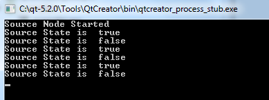
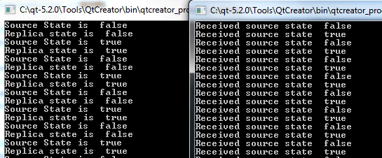

Example 1: Direct Connection using a Static Source
- Create a source object
To create this Source object, first we create the definition file,
simpleswitch.rep. This file describes the properties and methods for the object and is input to the Qt Remote Objects Compiler repc. This file only defines interfaces that are necessary to expose to the Replicas.simpleswitch.repclass SimpleSwitch { PROP(bool currState=false); SLOT(server_slot(bool clientState)); };
In
simpleswitch.rep,currStateholds the current state of the switch.server_slot()allows us to interact with the source - it will be connected to theechoSwitchState(bool newstate)signal.
For repc to process this file, add the following line to your
.profile:REPC_SOURCE = simpleswitch.rep
The
REPC_SOURCEvariable is only relevant for the Qt Remote Object module, so you need to add it to your project as well:QT += remoteobjects
repc creates the
rep_SimpleSwitch_source.hheader in the build directory that you specify. For more information, see Source.repc creates three helper classes for use with QtRO. For this example, we use the basic:
SimpleSwitchSimpleSource. It's an abstract class, defined inrep_SimpleSwitch_source.h. We derive from it to define our SimpleSwitch implementation class as shown below:simpleswitch.h#ifndef SIMPLESWITCH_H #define SIMPLESWITCH_H #include "rep_SimpleSwitch_source.h" class SimpleSwitch : public SimpleSwitchSimpleSource { Q_OBJECT public: SimpleSwitch(QObject *parent = nullptr); ~SimpleSwitch(); virtual void server_slot(bool clientState); public Q_SLOTS: void timeout_slot(); private: QTimer *stateChangeTimer; }; #endif
In
simpleswitch.h,stateChangeTimeris a QTimer that is used to toggle the state of our SimpleSwitch.timeout_slot()is connected tostateChangeTimer's timeout() signal.server_slot()-- which is called automatically on the source whenever any replica calls their version of the slot -- outputs the received value.currStateChanged(bool), defined in the repc-generatedrep_SimpleSwitch_source.h, is emitted whenevercurrStatetoggles. In this example, we ignore the signal on the source side, and handle it later on the replica side.
The definition of our
SwitchStateclass is shown below:simpleswitch.cpp#include "simpleswitch.h" // constructor SimpleSwitch::SimpleSwitch(QObject *parent) : SimpleSwitchSimpleSource(parent) { stateChangeTimer = new QTimer(this); // Initialize timer QObject::connect(stateChangeTimer, SIGNAL(timeout()), this, SLOT(timeout_slot())); // connect timeout() signal from stateChangeTimer to timeout_slot() of simpleSwitch stateChangeTimer->start(2000); // Start timer and set timout to 2 seconds qDebug() << "Source Node Started"; } //destructor SimpleSwitch::~SimpleSwitch() { stateChangeTimer->stop(); } void SimpleSwitch::server_slot(bool clientState) { qDebug() << "Replica state is " << clientState; // print switch state echoed back by client } void SimpleSwitch::timeout_slot() { // slot called on timer timeout if (currState()) // check if current state is true, currState() is defined in repc generated rep_SimpleSwitch_source.h setCurrState(false); // set state to false else setCurrState(true); // set state to true qDebug() << "Source State is "<<currState(); }
- Create a registry
Because this example uses a direct connection between nodes, we can omit this step.
- Create a host node
The host node is created as shown below:
QRemoteObjectHost srcNode(QUrl(QStringLiteral("local:switch")));
- Host source object and remoting
The following statements instantiate the Source object and pass it on to the host to enable "remoting", which is the process of making an object visible to the QtRO network:
SimpleSwitch srcSwitch; // create simple switch srcNode.enableRemoting(&srcSwitch); // enable remoting
The contents of
main.cppfile that implements the steps described above are as follows:main.cpp#include <QCoreApplication> #include "simpleswitch.h" int main(int argc, char *argv[]) { QCoreApplication a(argc, argv); SimpleSwitch srcSwitch; // create simple switch QRemoteObjectHost srcNode(QUrl(QStringLiteral("local:switch"))); // create host node without Registry srcNode.enableRemoting(&srcSwitch); // enable remoting/sharing return a.exec(); }
Compile and run this source-side project. The output, without any replicas created, should look as shown below with the switch state toggling between
trueandfalseevery two seconds.
The subsequent steps are for creating the replica side of the network, which in this example gets the state of switch from the Source and echoes it back.
Replica Code
- Use repc to add a replica to your project
We use the same API definition file as we did on the source side,
SimpleSwitch.rep, to create a Replica header file using the repc. Include the following line in your client side.profile, specifying a.repfile input:REPC_REPLICA = simpleswitch.rep
The repc tool generates a
rep_SimpleSwitch_replica.hfile in the build directory. For more information, see Replica. - Create a node to connect with the source's host node
The following code instantiates the second node on the network and connects it with the source host node:
QRemoteObjectNode repNode; // create remote object node repNode.connectToNode(QUrl(QStringLiteral("local:switch"))); // connect with remote host node
- Call the node's acquire() to create a pointer to a replica
First, we instantiate a replica:
QSharedPointer<SimpleSwitchReplica> ptr; ptr.reset(repNode.acquire<SimpleSwitchReplica>()); // acquire replica of source from host node
Note: acquire() returns a pointer to the replica, but doesn't manage its lifetime. This example shows the recommended process of wrapping the returned pointer in a QSharedPointer or QScopedPointer to ensure that the pointer is always deleted properly.
main.cppimplements the steps described above and instantiates our object:main.cpp#include <QCoreApplication> #include "client.h" int main(int argc, char *argv[]) { QCoreApplication a(argc, argv); QSharedPointer<SimpleSwitchReplica> ptr; // shared pointer to hold source replica QRemoteObjectNode repNode; // create remote object node repNode.connectToNode(QUrl(QStringLiteral("local:switch"))); // connect with remote host node ptr.reset(repNode.acquire<SimpleSwitchReplica>()); // acquire replica of source from host node Client rswitch(ptr); // create client switch object and pass reference of replica to it return a.exec(); }
The complete declaration and definition for the
Clientclass is as follows:client.h#ifndef _CLIENT_H #define _CLIENT_H #include <QObject> #include <QSharedPointer> #include "rep_SimpleSwitch_replica.h" class Client : public QObject { Q_OBJECT public: Client(QSharedPointer<SimpleSwitchReplica> ptr); ~Client(); void initConnections();// Function to connect signals and slots of source and client Q_SIGNALS: void echoSwitchState(bool switchState);// this signal is connected with server_slot(..) on the source object and echoes back switch state received from source public Q_SLOTS: void recSwitchState_slot(); // slot to receive source state private: bool clientSwitchState; // holds received server switch state QSharedPointer<SimpleSwitchReplica> reptr;// holds reference to replica }; #endif
client.cpp#include "client.h" // constructor Client::Client(QSharedPointer<SimpleSwitchReplica> ptr) : QObject(nullptr),reptr(ptr) { initConnections(); //We can connect to SimpleSwitchReplica Signals/Slots //directly because our Replica was generated by repc. } //destructor Client::~Client() { } void Client::initConnections() { // initialize connections between signals and slots // connect source replica signal currStateChanged() with client's recSwitchState() slot to receive source's current state QObject::connect(reptr.data(), SIGNAL(currStateChanged()), this, SLOT(recSwitchState_slot())); // connect client's echoSwitchState(..) signal with replica's server_slot(..) to echo back received state QObject::connect(this, SIGNAL(echoSwitchState(bool)),reptr.data(), SLOT(server_slot(bool))); } void Client::recSwitchState_slot() { qDebug() << "Received source state "<<reptr.data()->currState(); clientSwitchState = reptr.data()->currState(); Q_EMIT echoSwitchState(clientSwitchState); // Emit signal to echo received state back to server }
Compiling and running this example together with the source-side example generates the following output:
